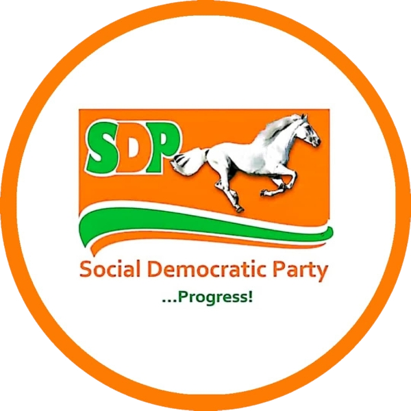

Born in Lafia
Born on 17 September 1961 in Lafia, Nasarawa State.

SDP Candidate for Governor, Nasarawa State 2027Nasarawa is ready for progress.
A lifetime of service in national security, now ready to serve Nasarawa. Safer communities, better rural roads, stronger healthcare and water for every home.
A concise timeline that can be expanded as the campaign team supplies verified documents and photographs.
Born on 17 September 1961 in Lafia, Nasarawa State.
Graduated from Ahmadu Bello University with a B.Sc. (Hons.) in Geography.
Enlisted as a Cadet Assistant Superintendent of Police.
Served with INTERPOL's General Secretariat on economic and financial crime matters.
Earned an M.Sc. in International Criminal Justice Systems from the University of Portsmouth.
Served as Commissioner of Police in Enugu State Command.
Appointed Nigeria's 20th Inspector-General of Police on 15 January 2019.
Left office as Inspector-General of Police in April 2021.
News reports in September 2026 identified him as the SDP's Nasarawa governorship candidate for 2027.
Projects and empowerment programmes, community by community. Filter by type or LGA and open any entry to see the photos and details.
Enter your name and community, upload your photo and download a poster to share. Everything happens in your browser; nothing is uploaded.
Your photo appears as a small circle on the poster. Use only photos you have permission to publish.
0 posters downloaded so far